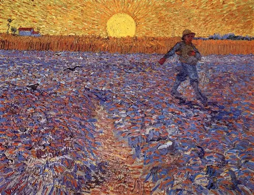

O Sol de Arles
Ciclos e Eternidade
Em "O Semeador no Sol Poente", Van Gogh utiliza o contraste simultâneo entre o amarelo do céu e o violeta do campo para criar uma vibração quase mística.
Para Vincent, o semeador era um símbolo da força vital e do ciclo infinito da natureza — a vida que nasce da terra sob o olhar do sol, que ele frequentemente associava ao divino.

O Poder Complementar
#F2CB05
#D98E04
#45408C
#232659